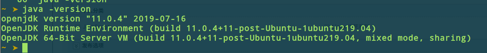
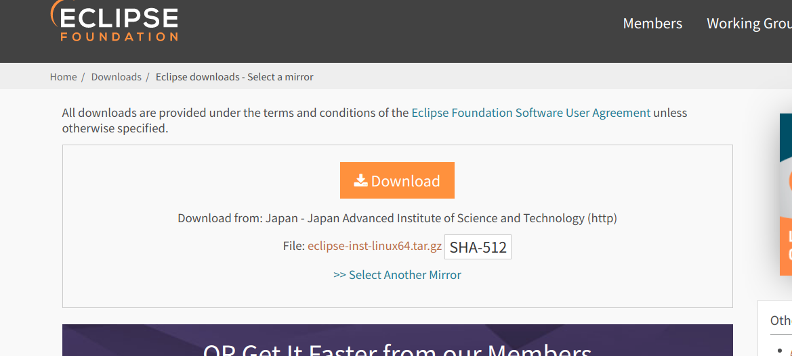
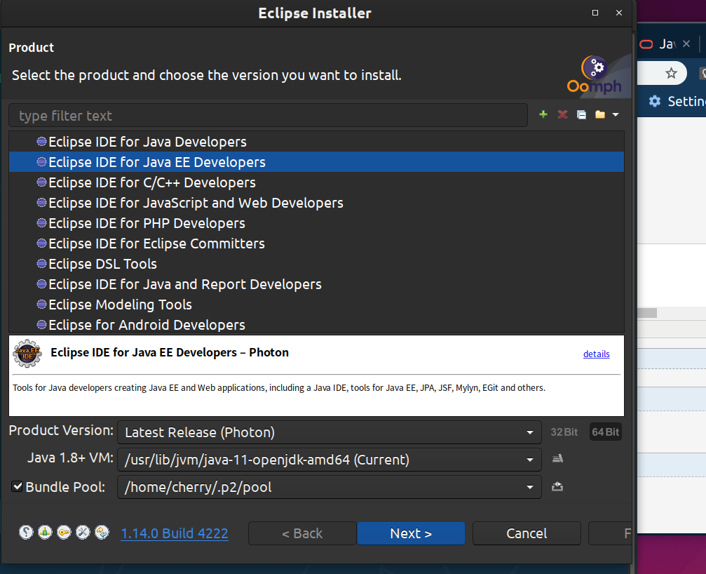

首先是要安装Java环境, 即安装JAVA JDK, 并且配置好PATH; 如果装好了, 可以跳到下一步;
这里我的安装方法不是, 在官网下载JDK然后手动配置, 这样太慢了而且容易出错;
其实使用Bash就可以, Ctrl+Atl+T 打开终端; 输入以下命令:
sudo apt install openjdk-11-jdk然后等待命令执行完毕, 这时Java环境就安装好了, 自动配置好了Path, 很方便吧! 比Windows还省事;
这时输入 java -version 
出现这样就是安装成功了, 现在进入下一步:
第二步:
安装Eclipse, 打开官网, 点击Download下载, 在弹出的框中选择你要放置的目录, 记住这个目录, 别找不到啦!!!
下载完成之后进入下载目录, (我这里的名字是自己下载的时候自己输入的名字短点好操作些)把它移动到opt文件夹下, 然后进行解压, 依次输入以下命令
sudo mv eclipse.tar.gz /opt
cd /opt
sudo tar zxvf eclipse.tar.gz
然后进入eclipse-installer目录下:
cd eclipse-installer
之后进行安装:
./eclipse-inst
这时如果之前配置正常的话, 就会弹出 安装界面:

按图选择JAVA EE之后全部点击Next, 弹出对话框就选择 Accept
安装好之后, 就自己打开了, 这个时候还没完, 先把Eclipse关掉;
因为Linux下的Eclipse自己是不带图标的这个时候就需要我们自己, 给它添加图标了;
找到刚才安装的位置一般就是默认的主文件夹下: 这个文件夹 jee-latest-released 里面, 右键文件管理的空白处,在这里打开终端, 输入
sudo mv eclipse/ /usr
然后进入这个文件夹
cd /usr/share/applications
如果没有 就创建一个
mkdir /usr/share/applications之后就是创建eclipse.desktop文件了 输入以下命令 sudo vim eclipse.desktop 按i 进入编辑模式然后负责以下代码
[Desktop Entry]
Encoding=UTF-8
Name=Eclipse
Comment=Eclipse IDE
Exec=/opt/eclipse/eclipse
Icon=/opt/eclipse/icon.xpm
Terminal=false
starttupNotify=true
Type=Application
Categories=Application;Development;
注意粘贴的时候要按; Shift+Ctrl+V
然后Esc , Shift+ : , 输入wq保存, 这个时候就创建好了, 双击eclipse.desktop文件试试 , 就打开了. 把它放到桌面就有快捷方式了;
如果双击不能打开, 那有可能是权限问题, 进入安装目录 cd /opt/eclipse 输入
sudo chmod a+x eclipse.desktop
赋予执行权限
如果不显示图标那也是权限问题, 进入刚才的目录, 输入
chmod 777 icon.xpm
赋予权限这样再次把文件拖到桌面, 就可以正常打开了.
如果你还是有问题, 请参考我的这篇博客 Linux的desktop文件正常编写赋权,仍无法打开解决办法
如有问题欢迎指出, 可以在下发交流, 我看到会回复的